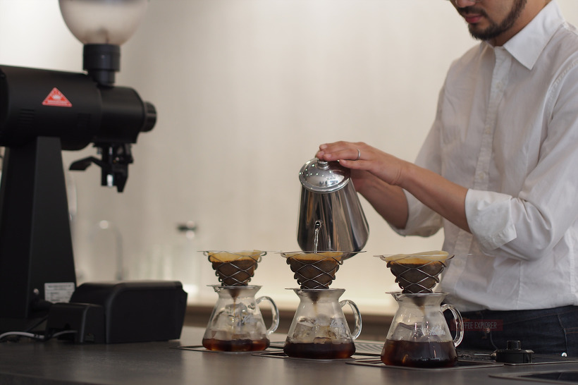

내가 좋아하는 취미는 커피 내려마시는 것이다.
그 중에서도 핸드드립으로 커피를 내려마시는 것을 좋아하는데 그 이유는 머신으로 내릴때보다 훨씬 부드럽고 연하기 때문이다.
간혹 어떨때는 홍차같은 느낌을 받기도 하여 정성들여 내렸다고 생각하면서 뿌듯해하기도 한다.
또한 커피 내려마시는 것을 좋아하는 이유는 원두를 그라인더로 분쇄하고, 필터종이를 린싱하고, 서버를 데우는 등 이런 과정을 진행하면서 잡생각도 사라지고 마음이 차분해져서 좋다.
가끔은 새로 산 원두가 궁금해 이것 저것 다양한 기구로 내려 마시다보니 밤 늦게까지 잠에 들지 못할때도 있다.
그럼에도 불구하고 나는 커피가 좋고 내가 가장 좋아하는 취미다.